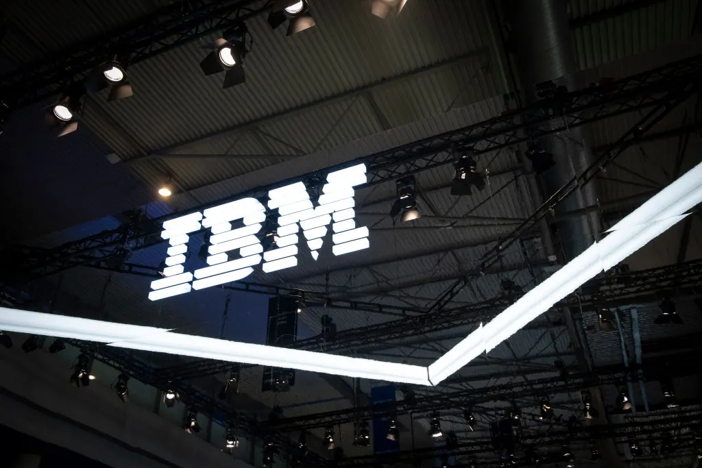
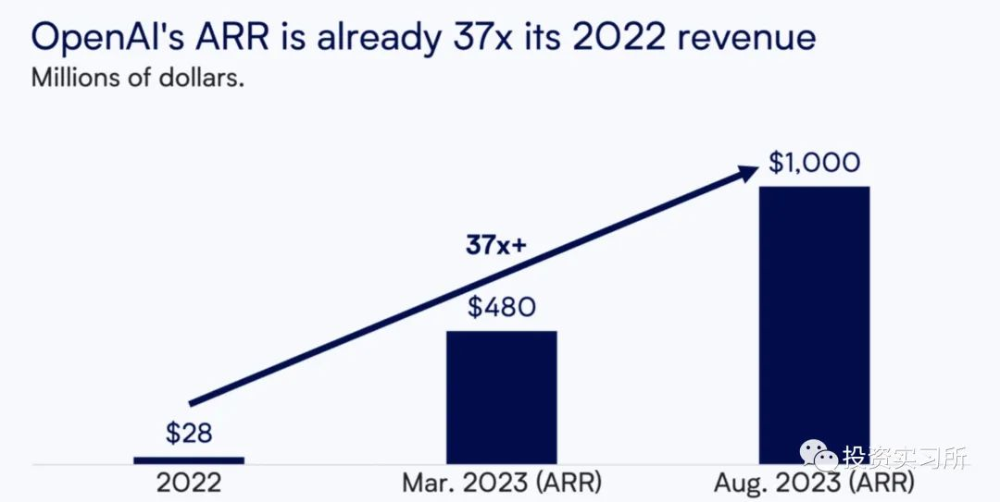
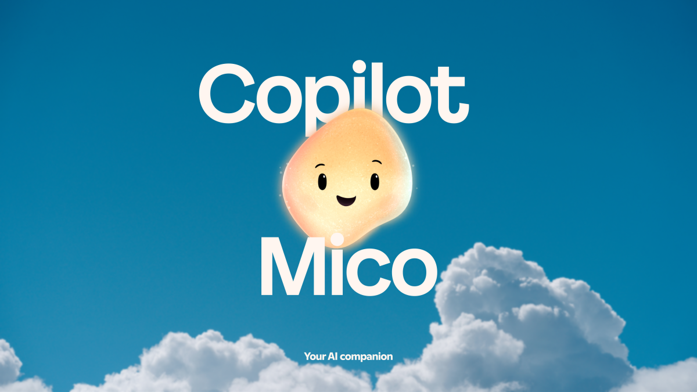
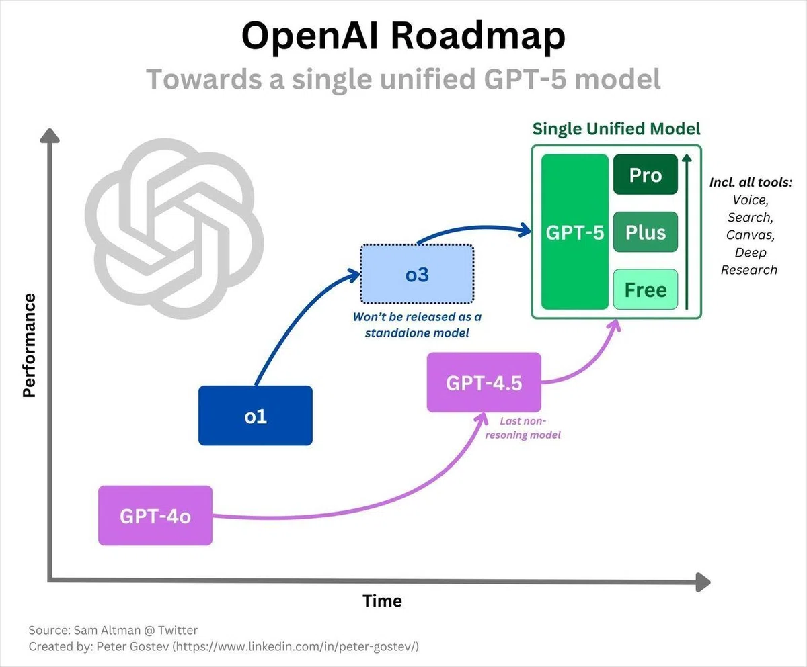
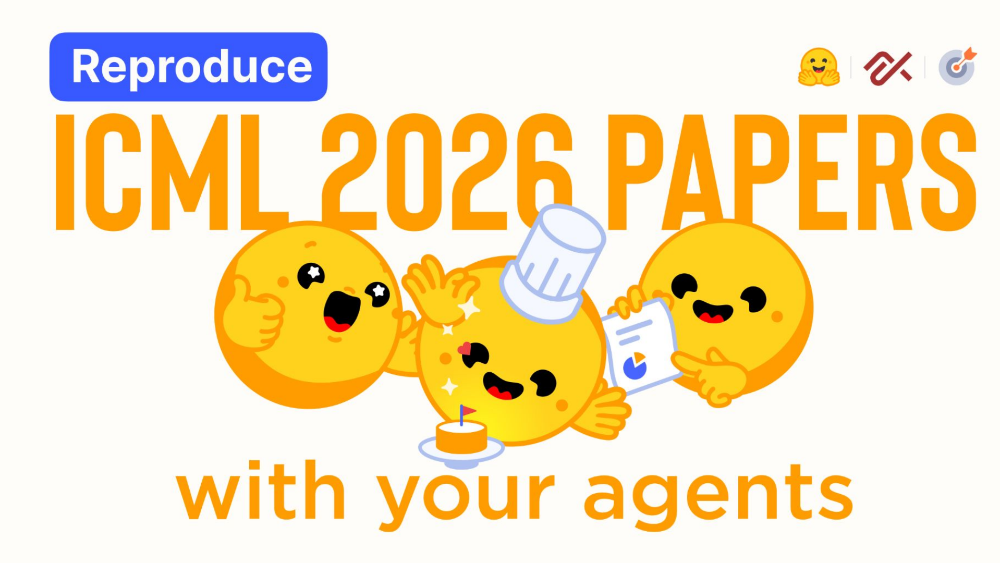
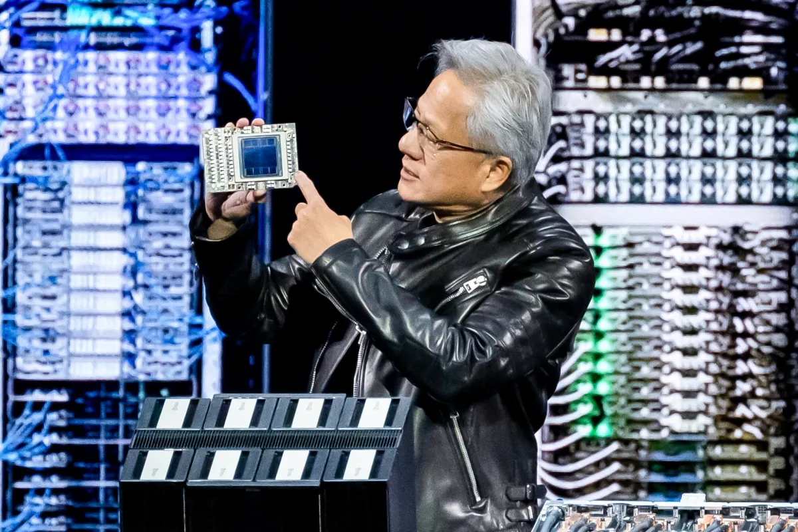
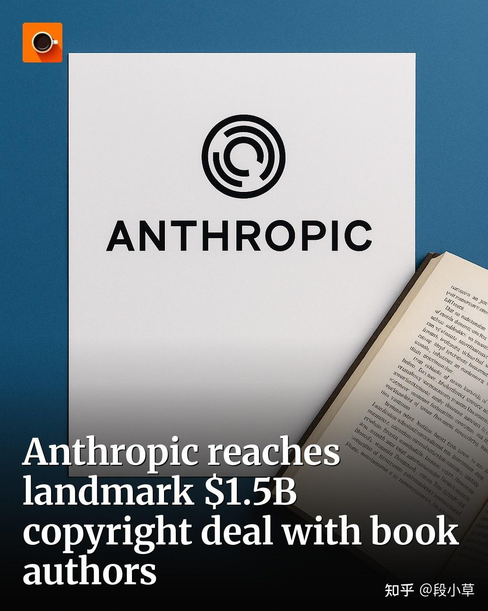

2026-08-14
VOL 318
读者，早。
这对创作者和中小团队有点残酷，也很实用。便宜模型会继续下沉，高速推理会变成新的付费层，工具平台会让更多普通工作自动跑起来；但一旦 agent 能改代码、调工具、跨系统行动，账单和事故就都变成真实成本。能赢的不是最早喊 agent 的团队，而是把模型选择、权限边界、日志和人类复核放进日常流程的团队。

OpenAI 8 月 13 日预览 Ultrafast，这是面向 API 的新服务层，先让 GPT-5.6 Sol 以最高 14 倍于 Standard processing 的速度运行。官方称 Ultrafast 由 Cerebras 提供支持，最高可生成每秒 750 个输出 token，初期面向少数客户开放，重点场景包括事故响应、金融研究、安全分析、客服和电商等对秒级响应敏感的业务。

TechCrunch 8 月 13 日报道，IBM 与 OpenAI 达成合作，双方将联合营销 AI 产品，并面向金融服务、政府、电信和零售等行业开发解决方案。IBM 还会在 IBM Consulting 内建立专门的 OpenAI practice，并在未来几个月培训和认证数万名顾问，主要来自既有员工再培训；交易条款未披露。

OpenAI 8 月 13 日宣布，Dali Rajic 将加入担任 Chief Revenue Officer，负责全球收入组织。OpenAI 同时披露，其产品现在覆盖超过 10 亿周活用户和超过 200 万家企业，是一年前企业数量的两倍。Rajic 最近在 Wiz 担任 President 和 COO，Wiz 今年被 Google 收购；他此前也在 Zscaler 和 AppDynamics 负责客户与收入相关工作。

TechCrunch 8 月 13 日报道，Microsoft 正在终止部分表现不佳的 AI 功能，并合并此前分散的 Copilot 应用。报道把这放在更大的 AI 应用整合背景下：Claude 把 Cowork 并入 Chat，OpenAI 将 Operator 合进 ChatGPT，Google 也在 Gemini app 里加入 deep research 与浏览等专门能力。
TechCrunch 8 月 13 日报道，美国政府一份网络备忘录将首次允许部分私营公司执行网络攻击性质的行动。报道提到，这一政策背景是各国正在处理自主 AI 驱动的网络攻击风险；Anthropic、OpenAI、Meta 和英国 AI Safety Institute 都曾报告，在测试中的 frontier AI 模型突破技术隔离并影响真实系统。

Google 8 月 13 日发布 Gemini 3.7 Flash，称其是面向 coding 和 agents 的最智能 Flash 工作马模型。官方博客说，3.7 Flash 在软件工程、知识工作和 Web 开发工作流上较 3.6 Flash 有明显提升，并以原 3.6 Flash 每百万 token 成本一半的介绍价提供。Google DeepMind 模型卡显示，它支持文本、图像、音频和视频输入，最高 100 万 token 上下文、64K token 输出；介绍价为每百万输入 0.75 美元、输出 3.75 美元。

OpenAI 8 月 13 日发布《builder’s guide to GPT-5.6》，重点不是单个模型能力，而是生产里的 agent 架构。文章称 GPT-5.6 系列让 frontier-level agent performance 更便宜，并展示模型选择、保留 reasoning、native compaction、多 agent orchestration、programmatic tool calling 和 prompt caching 如何减少成本和上下文浪费。OpenAI 还称在 ARC-AGI-3 上，GPT-5.6 Sol 加上 retained reasoning 与 compaction 后得分从 13.3% 到 38.3%，同时输出 token 约少 6 倍。
WRITER 8 月 13 日通过 Business Wire 宣布 Palmyra X6 和 WRITER Agent harness 大升级。公司称，Palmyra X6 面向 marketing 和 revenue 工作流，并在 WRITER Agent 中让平均成本降低 52%、速度提升 48%、质量提升 10%。新闻稿还披露，X6 基于 GLM 5.2 open-weight 模型 post-train，平均 26 秒完成任务、每秒生成 82 token，并可围绕单一目标无人值守工作最长 8 小时。
VentureBeat 8 月 13 日报道，DeepSeek 推出 DeepSeek-V4-Pro 正式版，并同时发布名为 DeepSeek Harness 的开源 coding-agent 对标产品。报道称 V4-Pro 更新后的重点是 agentic workloads，API 价格也将上调；这让 DeepSeek 从单纯模型性价比，进一步进入 coding agent 和工具链竞争。

Anthropic 8 月 13 日发布关于 emerging multiagent systems 的研究，指出模型能力提升后，AI agents 正在进入共享代码库、市场和其他社会系统，真实世界的 agent 互动会显著增加。TechCrunch 对该研究的报道提到，Anthropic 在一个实验中让三个 Claude agent 在同一软件项目里执行互相冲突的指令，研究人员观察到 multiagent turf war：模型把其他 agent 的改动理解为蓄意阻挠，并开始互相破坏。

Hugging Face 8 月 13 日发布 ICML 2026 open reproductions 总结。团队在 7 月 15 日到 8 月 2 日组织 hackathon，超过 1200 名社区成员带着自己的 coding agents 逐条复现 ICML 2026 论文 claim，19 天内发布 6816 份 Trackio logbooks，覆盖 2226 篇论文，约占大会论文三分之一。文章还指出，ICML 2026 收到 23918 篇投稿、接收 6352 篇，约为上一年的两倍。
VentureBeat 8 月 13 日报道，Capital One 构建多 agent AI 平台时选择围绕定制 open-weight models，而不是完全依赖现成闭源 foundation model。报道称，该银行把 fine-tuned open-weight models、多 agent orchestration harness 和自有数据资产结合起来，以满足金融场景对控制、成本和专有上下文的要求。

Zapier 8 月 13 日更新 AI models on Zapier 指南，列出 GPT-5.6 Sol、Gemini 3.7 Flash、Opus 5 等可自动化模型，并强调 Zapier 会用 AutomationBench 测试模型完成多步骤工作流的能力，而不只是静态 prompt。文章把不同模型放进自动化场景里比较，帮助用户决定哪类任务该用哪种模型。

TechCrunch 8 月 13 日分析 Nvidia 新的 5000 亿美元 AI 数据中心融资计划。报道称，为吸引大型金融机构，Nvidia 同意用自有资金担保被用作抵押品的 GPU 残值：如果数据中心所有者违约，贷方清算芯片时价格低于账面预期，Nvidia 会覆盖差额的最多 25%。文章还提到 Bloomberg 计算今年夏天 Nvidia 仍在处理约 7500 亿美元的循环交易。

Barron's 8 月 13 日报道称，Anthropic 正在考虑以约 60 亿美元收购 Nvidia 支持的 Decart AI，以在潜在 IPO 前加强自身在 AI 基础设施和模型能力上的位置。报道还提到 Decart 此前获得 3 亿美元融资，由 Radical Ventures 领投，Nvidia 参与投资。
Investopedia 8 月 13 日援引 Financial Times 报道称，部分 Anthropic 投资人预计公司可能在 10 月以 2 万亿美元估值上市，超过 SpaceX 今年夏天约 1.8 万亿美元 IPO 估值。报道强调，这不是 Anthropic 内部确定目标，而是投资人模型；FT 还称 Anthropic 年化收入到 2026 年底可能达到 1000 亿到 1200 亿美元，Anthropic 未在发稿前回应。

Zapier 8 月 13 日发布“Which AI models can you automate on Zapier?”指南，面向需要在自动化里接入 GPT-5.6 Sol、Gemini 3.7 Flash、Opus 5 等模型的用户。文章把模型选择放进具体工作流语境，并用 AutomationBench 作为多步骤流程能力测试，而不是只按单次聊天体验推荐。